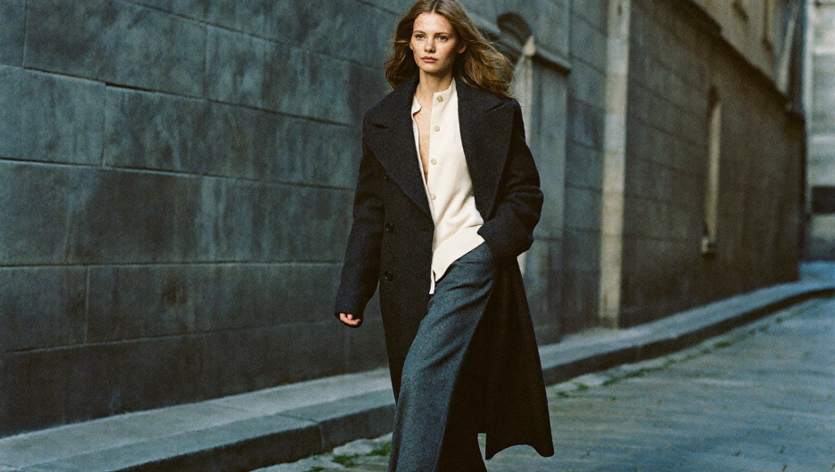
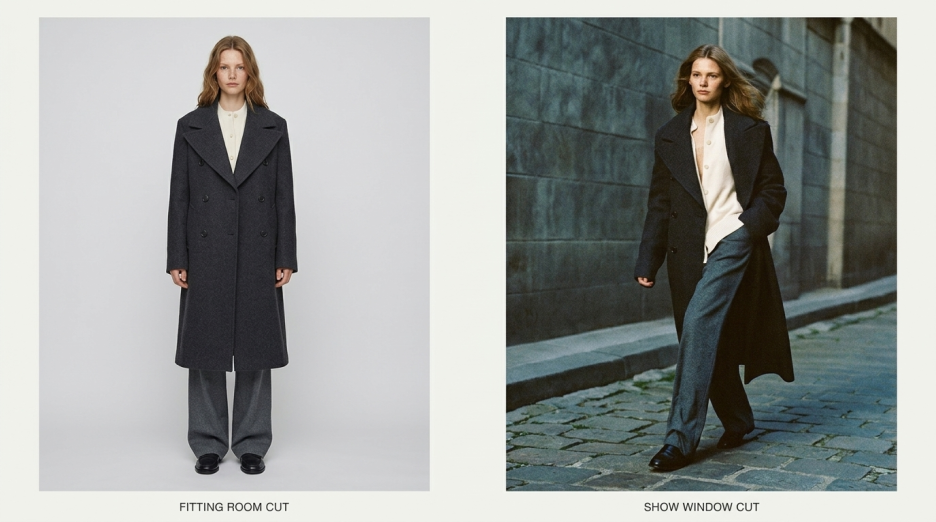
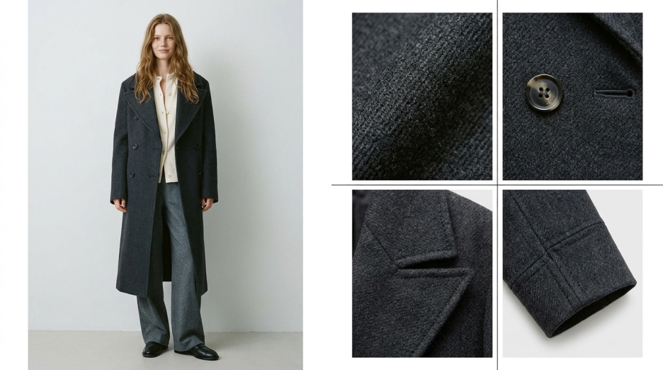
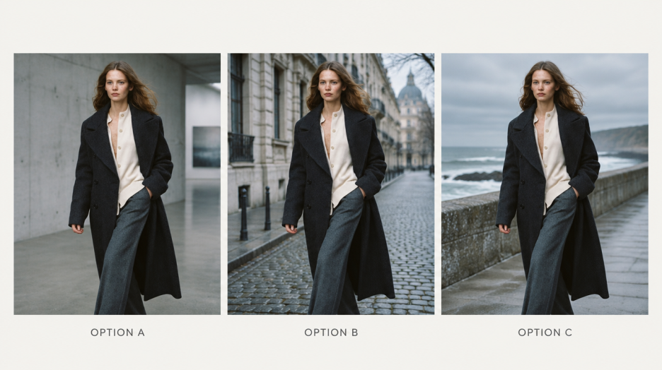
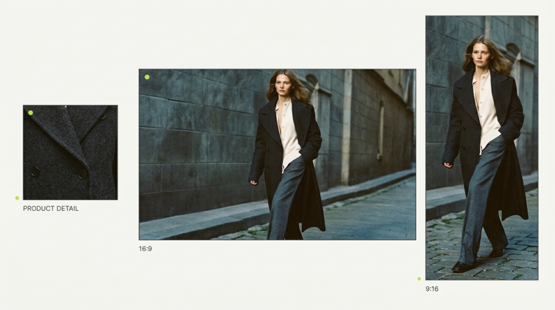
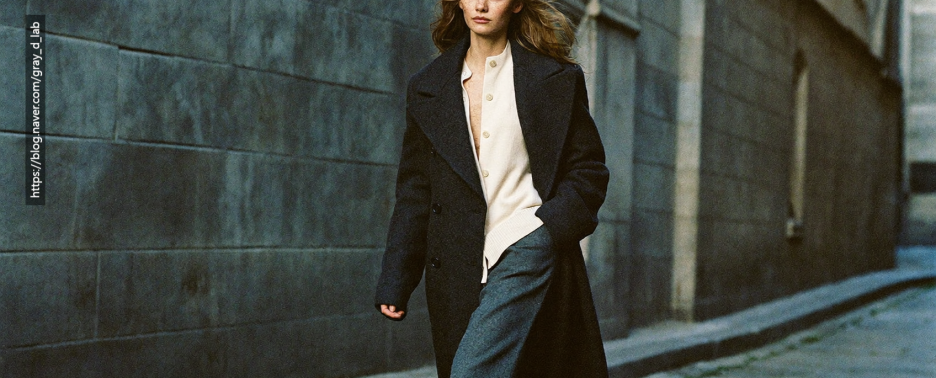

촬영하는 게 나을까요, AI로 하는 게 나을까요?
룩북 촬영이나 화보 촬영 견적을 알아보던 브랜드 담당자분들이 상담에서 가장 자주 하시는 질문입니다. GRaY D. Lab은 AI 영상을 만드는 회사지만, 이 질문에 늘 "AI가 낫습니다"라고 답하지는 않습니다. 같은 시즌 안에서도 장면마다 답이 다르기 때문입니다.
매장을 떠올려 보시면 쉽습니다. 매장에는 고객이 옷을 만져 보고 입어 보는 행거와 피팅룸이 있고, 길을 걷던 사람의 발걸음을 멈추게 하는 쇼윈도가 있습니다. 둘 다 꼭 필요하지만 역할은 완전히 다릅니다.
패션 콘텐츠도 같습니다. 상품의 핏과 소재를 확인시키는 '피팅룸 컷'은 실제 옷을 입혀 찍는 의류 촬영이 강하고, 시즌의 분위기로 시선을 붙잡는 '쇼윈도 컷'은 AI 화보와 AI 룩북이 강점을 가집니다. 이 글에서는 어떤 장면에 무엇을 써야 하는지, 판단 기준을 정리했습니다.
룩북 촬영 vs AI 화보, 한눈에 비교하기
같은 착장이라도 상세페이지에서는 재킷의 어깨선과 여밈이 중요하고, 캠페인 첫 장면에서는 전체 실루엣과 움직임이 먼저 보여야 합니다. 필요한 결과물을 용도별로 적어 보면 어떤 장면에 촬영이 필요하고, 어떤 장면에 연출의 여지를 둘 수 있는지 보입니다.
| 구분 | 룩북 촬영·화보 촬영 | AI 화보·AI 룩북 |
|---|---|---|
| 강한 장면 | 핏·소재·디테일 확인 (피팅룸 컷) | 시즌 무드·캠페인 연출 (쇼윈도 컷) |
| 제품 재현 정확도 | 실제 제품 그대로 | 디테일 검수 필요, 일부 달라질 수 있음 |
| 공간·연출 | 섭외 가능한 장소·날씨·시간에 좌우 | 해외 로케·현실에 없는 공간도 연출 |
| 모델 | 일정·인상·체형에 맞춰 섭외 | 브랜드에 맞는 인상 설계, 실제 착용은 불가 |
| 수정 | 촬영 후 변경은 재촬영 필요 | 단계별 시안 비교, 확정 후 큰 변경은 재작업 |
| 비용 구조 | 모델·공간·스태프·후반 작업 | 기획·장면 생성·디테일 검수·편집 |
| 일정 변수 | 섭외·날씨·스튜디오 일정 | 기획 확정과 피드백 일정 |
| 매체별 버전 | 촬영 시 구도 확보 필요 | 매체별 구도 재구성 비교적 유연 |
비용도 구조가 다릅니다. 룩북 촬영 비용에는 모델, 공간, 스태프, 후반 작업이 영향을 주고, AI 방식에서는 장면 설계와 생성, 제품 디테일을 확인하고 보정하는 범위가 영향을 줍니다. 양쪽 견적을 비교하실 때는 같은 착장 수, 같은 결과물 수, 같은 납품 화면 비율을 기준으로 놓고 보시는 것이 정확합니다.
피팅룸 컷: 실제 핏과 소재가 구매를 좌우할 때는 촬영
고객이 화면에서 본 핏과 디테일을 기준으로 상품을 고른다면 의류 촬영이 맞습니다. 허리선이 어디에 놓이는지, 움직일 때 밑단이 어떻게 떨어지는지, 조명에 따라 원단의 광택이 어떻게 달라지는지는 실제 옷을 입혀 촬영할 때 가장 정확하게 담깁니다. 상세페이지나 바이어에게 보여줄 상품 소개 자료라면 더욱 그렇습니다.
원단 스와치로 색과 조직을 확인해도, 착용했을 때의 드레이프는 샘플을 입혀 봐야 판단할 수 있는 것과 같습니다. 예를 들어 짐웨어의 허리 밴드가 움직일 때 어디에 놓이는지 보여줘야 한다면, 모델이 실제 제품을 입고 동작하는 모습을 기준 컷으로 확보하는 편이 좋습니다.
이런 장면은 GRaY D. Lab도 촬영을 권합니다. 판매에 직접 연결되는 정보가 정확하지 않으면, 아무리 멋진 영상도 반품과 문의로 돌아오기 때문입니다.
촬영을 준비하신다면 두 가지를 챙겨 보세요.
- 룩북 모델: 브랜드가 원하는 인상과 함께, 해당 착장이 어떤 체형에서 어떻게 보이는지 확인
- 의류 촬영 스튜디오: 공간의 분위기뿐 아니라 원단 조직과 어두운 색의 디테일이 조명 아래에서 어떻게 보이는지 확인

쇼윈도 컷: 시즌 분위기와 캠페인 장면은 AI 화보
반대로 컬렉션의 인상을 남기는 장면이라면 AI 룩북과 AI 화보가 강점을 보입니다. 시즌의 색감, 장소, 조명, 모델의 움직임을 하나의 분위기로 묶어 보여줄 수 있기 때문입니다.
예를 들어 늦가을 컬렉션을 낮은 햇빛이 드는 유럽의 골목으로 설정했다고 해 보겠습니다. 촬영이라면 로케이션 섭외와 날씨, 해 질 녘의 짧은 시간을 모두 맞춰야 합니다. AI 화보에서는 같은 착장을 두고 배경의 밝기와 카메라 앵글을 달리한 시안을 여러 개 비교한 뒤 방향을 고를 수 있습니다.
패션 화보를 기획할 때는 메인 컷의 목적부터 정해 보세요. 컬렉션의 인상을 남기는 컷이라면 빛과 공간에 더 많은 연출을 줄 수 있습니다. 반면 상품을 특정할 수 있어야 하는 장면이라면 원단 색, 로고 위치, 포켓 모양처럼 실제 제품과 맞아야 할 항목을 먼저 정해야 합니다.

AI 화보의 한계도 알고 선택해야 합니다
AI 화보와 영상에서는 원단의 광택이 달라지거나, 컷이 바뀔 때 단추 수와 스티치가 달라질 수 있습니다. 움직임이 들어가는 영상은 정지 화면에서 맞아 보였던 디테일이 다음 컷에서 달라지기도 합니다.
그래서 GRaY D. Lab은 판매에 중요한 디테일을 실제 제품과 대조해 검수하고, 정확도를 확보하기 어려운 장면은 촬영본을 쓰시도록 먼저 말씀드립니다. 할 수 있는 것과 어려운 것을 처음부터 구분해 드리는 것이 결국 일정과 비용을 아끼는 길이기 때문입니다.
가장 효과적인 방법: 피팅룸 컷은 촬영, 쇼윈도 컷은 AI
실제로는 한쪽만 고르기보다 두 방식을 나눠 쓰는 경우가 많습니다. 먼저 실제 제품을 확인시킬 컷과 시즌의 인상을 전할 장면을 나눕니다. 예를 들어 코트의 여밈과 소매 길이, 걸을 때의 실루엣은 촬영으로 담고, 캠페인 오프닝에는 컬렉션의 색감에 맞춘 AI 공간과 움직임을 넣는 방식입니다.
두 결과물을 한 영상에 넣을 때는 기준 컷을 먼저 정합니다. 기준 컷의 색감, 빛의 방향, 카메라 높이를 맞추면 장면이 바뀌어도 같은 시즌의 콘텐츠로 자연스럽게 이어집니다. 상세페이지에서는 촬영 컷을 상품 설명에 쓰고, 캠페인에서는 AI 연출 컷으로 분위기를 연 뒤 실제 제품 컷으로 이어갈 수도 있습니다.
홈페이지와 세로형 SNS에 함께 쓸 계획이라면, 처음부터 어느 화면에서 어떤 디테일을 보여줄지 정해 두세요. 가로 16:9에서 잘 보이던 코트 밑단이 세로 9:16으로 자르면 화면 밖으로 나갈 수 있습니다.
이 '장면 나누기'가 GRaY D. Lab이 가장 먼저 하는 일입니다. 기획 전에 브랜드의 포지션과 타깃을 분석하고, 패션 디자인 디렉터의 관점에서 어떤 장면이 상품을 설명해야 하고 어떤 장면이 분위기를 만들어야 하는지 구분해 제안합니다.

1분 자가 진단: 우리 브랜드에는 무엇이 맞을까?
아래 질문에 '예'라고 답한 개수를 세어 보세요.
A. 촬영이 필요하다는 신호
- 고객이 이 콘텐츠를 보고 핏이나 소재까지 판단해야 한다
- 로고, 봉제선, 패턴 등 실제 제품과 정확히 맞아야 하는 부분이 많다
- 실제 모델이 제품을 입고 움직이는 모습이 꼭 필요하다
B. AI 화보를 검토해 볼 신호
- 이번 콘텐츠의 주된 역할은 시즌이나 브랜드의 분위기 전달이다
- 섭외하기 어려운 장소나 여러 공간·조명 시안을 비교해 보고 싶다
- SNS, 홈페이지, 매장 등 여러 매체에 맞춘 버전이 필요하다
- A가 많다면: 룩북 촬영·화보 촬영을 중심으로 계획하세요.
- B가 많다면: AI 화보와 AI 룩북으로 먼저 시안을 받아 보세요.
- A와 B가 비슷하다면: 장면을 나눠 촬영과 AI를 함께 쓰는 방식이 효과적입니다.
이런 경우라면 상담이 특히 도움이 됩니다
- 시즌 오픈이 다가오는데 촬영 일정과 장소 섭외가 맞지 않을 때
- 해외 로케이션이나 현실에서 만들기 어려운 공간이 필요할 때
- 상품 컷은 이미 있는데 캠페인 분위기를 만들 장면이 부족할 때
- 촬영 견적을 받아 두었는데 AI로 대체하거나 보완할 수 있는 장면이 있는지 궁금할 때
자주 묻는 질문
AI 화보만으로 상세페이지를 만들 수 있나요?
분위기 컷은 가능하지만, 핏과 소재로 구매가 결정되는 상품이라면 실제 촬영 컷을 함께 쓰시길 권합니다.
이미 촬영한 사진이 있는데 활용할 수 있나요?
가능합니다. 보유하신 사진을 검토해 제품 기준 자료로 활용하고, 부족한 장면을 AI로 연출하는 방향을 함께 제안드립니다.
촬영과 AI 중 어느 쪽이 더 저렴한가요?
장면 수, 착장 수, 결과물 수에 따라 달라 한쪽이 항상 저렴하다고 말씀드리기 어렵습니다. 같은 조건으로 비교해 보시는 것이 정확합니다.
상담은 두 가지 질문으로 시작합니다
AI 영상 제작을 검토 중이라면, 무엇을 보여주고 싶은지와 어디에 쓸 영상인지만 먼저 알려주세요. AI 영상 제작 업체와의 첫 상담도 이 두 가지면 충분합니다. 레퍼런스가 없어도 원하는 무드를 말씀해 주시면 됩니다.
이미 받아 두신 촬영 견적이나 기획안이 있다면 함께 보내주세요. 어떤 장면은 촬영이 맞고, 어떤 장면은 AI로 대체하거나 보완할 수 있는지 비교해 드립니다.
피팅룸 컷과 쇼윈도 컷을 제대로 나누는 것, 그것이 같은 예산으로 더 좋은 시즌 콘텐츠를 만드는 출발점입니다.

글 · Kris W (감우식)
GRaY D. Lab 대표 | 한국AI크리에이터협회 패션분과장